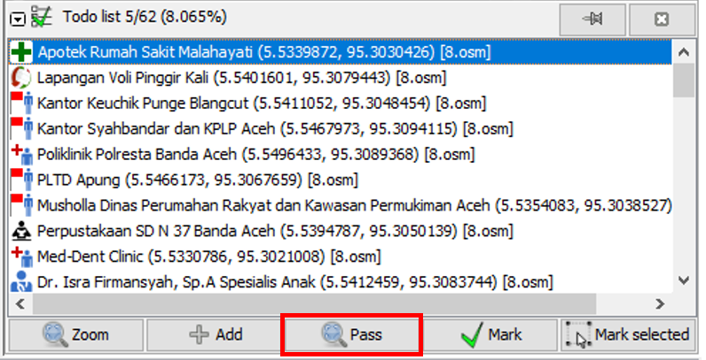

Menggunakan To-Do List di JOSM
Tujuan Pembelajaran:
- Mampu melakukan instalasi alat tambahan untuk memasukkan data di JOSM
- Mampu mengoperasikan alat tambahan to-do list di JOSM untuk memasukkan data
Setelah melakukan kegiatan survei dengan menggunakan aplikasi OpenMapKit (OMK), langkah selanjutnya yang perlu Anda lakukan ialah memasukkan data survei berupa objek-objek titik lokasi tersebut ke dalam OpenStreetMap dengan menggunakan JOSM. Untuk memudahkan Anda dalam melakukan hal tersebut, Anda perlu menginstal perangkat tambahan pada JOSM yaitu plugin Todo list. Plugin Todo list merupakan perangkat tambahan yang dapat membantu Anda untuk menemukan objek hasil survei yang akan Anda upload pada peta OpenStreetMap (OSM).
I. Menginstal to-do list plugin di JOSM
Karena plugin Todo list merupakan perangkat tambahan pada JOSM, Anda perlu melakukan instalasi plugin JOSM terlebih dahulu sebelum menggunakannya. Langkah-langkah untuk menginstal plugin todo list di JOSM adalah sebagai berikut:
- Klik menu bar Edit → Preferences
- Akan muncul jendela Preferences dan pilih menu Plugins untuk menginstal plugins baru. Jika daftar plugins belum muncul, Anda dapat mengklik Download list dan pastikan internet Anda telah terkoneksi untuk men-download plugins.

- Untuk mencari plugin todo list Anda dapat menggunakan kotak pencarian Search. Lalu ketikkan todo pada kolom pencarian tersebut untuk menemukan plugin todo list. Setelah pencarian berhasil, Anda perlu mencentang kotak plugin todo untuk men-download plugin tersebut dan klik OK lalu tunggu sampai proses men-download selesai.

- Kotak jendela plugin todo akan muncul di sebelah kanan kanvas peta dan apabila kotak todo tersebut belum muncul, Anda dapat mengaktifkan panel plugin todo dengan cara klik pada bar menu Windows, kemudian klik menu todo Anda akan melihat panel Todo list di sebelah kanan JOSM Anda.

II. Menggunakan to-do list
Langkah-langkah penggunaan plugin to-do list adalah sebagai berikut:
- Anda perlu memasukkan terlebih dahulu semua file dengan format .osm yang akan dimasukkan kedalam OpenStreetMap (OSM). File .osm ini berisi objek titik hasil survei yang telah diekspor dari OpenMapKit (OMK) dengan cara klik File → Open pada menu bar.
- Dikarenakan satu file berisi satu titik objek, Anda perlu menggabungkan layer-layer tersebut hingga menjadi satu layer. Cara menggabungkan ialah pada panel Layers pilih semua layer yang akan digabungkan lalu klik kanan dan pilih Merge. Anda dapat memilih beberapa layer sekaligus dengan cara klik pada salah satu layer lalu tahan untuk untuk memilih semua layer pada panel atau klik layer satu persatu dengan menekan tombol Ctrl pada keyboard Anda.

- Setelah semua objek titik telah tergabung menjadi satu layer, Anda perlu memilih salah satu objek yang ingin Anda kerjakan. Setelah itu, Anda dapat memasukkan titik-titik objek tersebut ke dalam daftar to-do list dengan cara klik Add pada panel Todo list.

- Untuk memperbesar tampilan ke salah satu objek yang ingin Anda kerjakan, Anda dapat menggunakan pilihan Zoom pada panel Todo list atau klik dua kali pada objek di dalam daftar.

- Setelah Anda menemukan objek yang ingin dikerjakan dan telah melakukan perubahan yang diperlukan, Anda dapat menandai objek tersebut pada daftar todo untuk menghilangkan nama objek dari daftar dengan cara mengklik Mark pada panel Todo list. Anda juga menandai dengan memilih objek langsung pada peta dengan cara pilih dan klik objek pada peta lalu klik Mark selected. Untuk memahami langkah pada proses penambahan data OSM, Anda dapat mempelajari modul Menambahkan Data OSM Menggunakan JOSM.

- Apabila Anda ingin melewati satu objek tetapi masih ingin meninggalkan objek tersebut di dalam daftar untuk dikerjakan kemudian, Anda dapat mengklik Pass.

- Untuk menandai langsung semua objek di daftar Anda bisa menggunakan pilihan Mark All dengan cara klik kanan pada panel Todo list. Lalu apabila Anda ingin memunculkan kembali semua objek yang telah ditandai seperti semula, Anda dapat menggunakan pilihan Unmark all. Anda juga dapat menghapus seluruh daftar nama objek pada panel Todo list dengan cara klik kanan pada panel dan klik Clear the todo list.

RINGKASAN
Jika Anda dapat mengikuti dan memperhatikan seluruh tahapan dalam bab ini, maka Anda telah berhasil memasang perangkat tambahan di JOSM. Selain itu, Anda juga telah berhasil mempelajari dan mempraktikkan bagaimana cara mengoperasikan plugin Todo list di JOSM untuk memudahkan pekerjaan Anda nantinya.